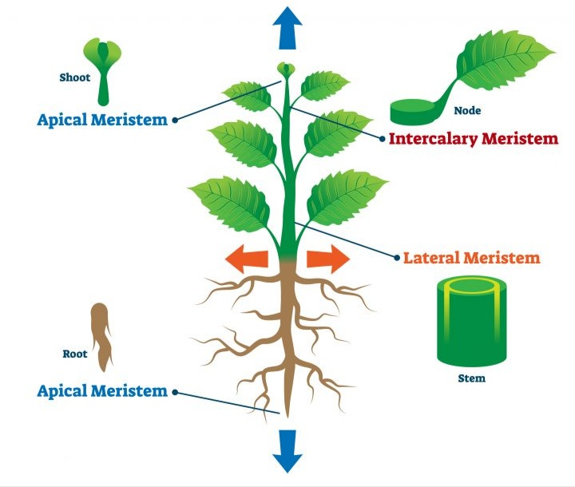
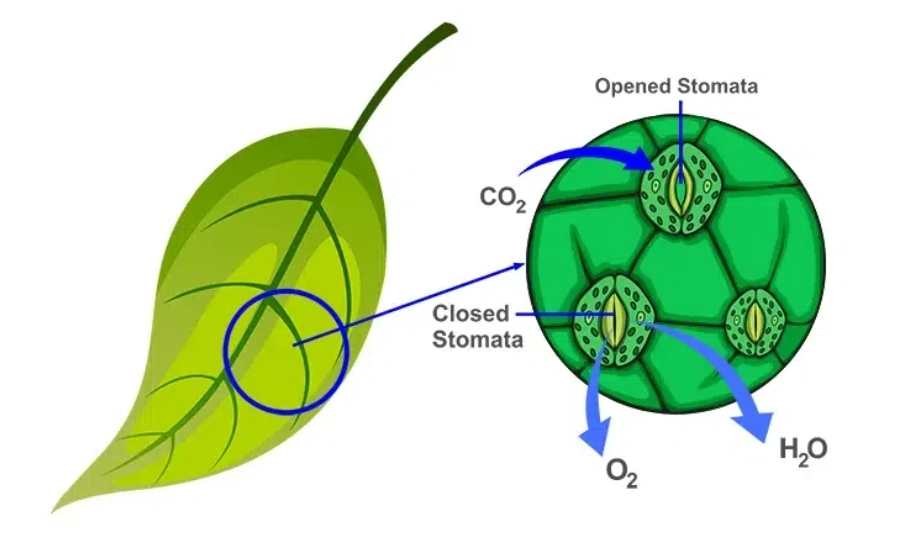
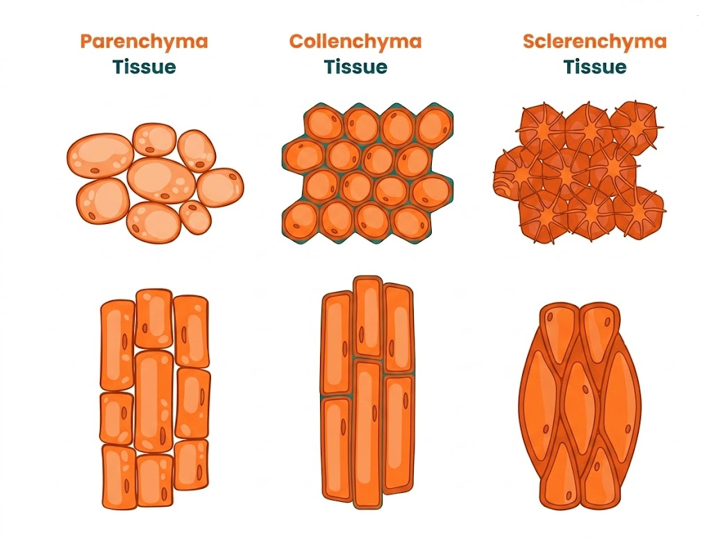
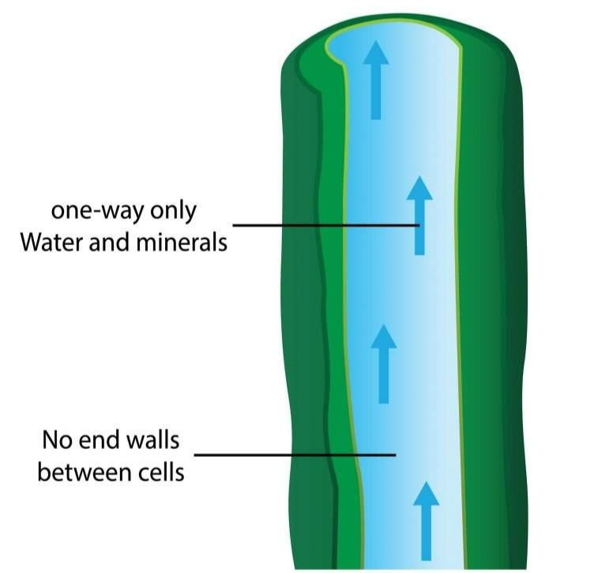
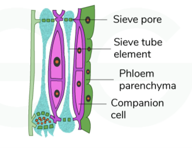
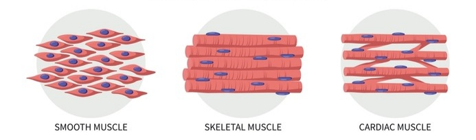
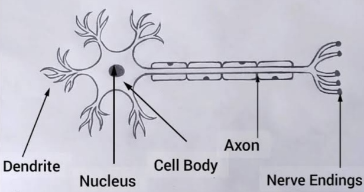
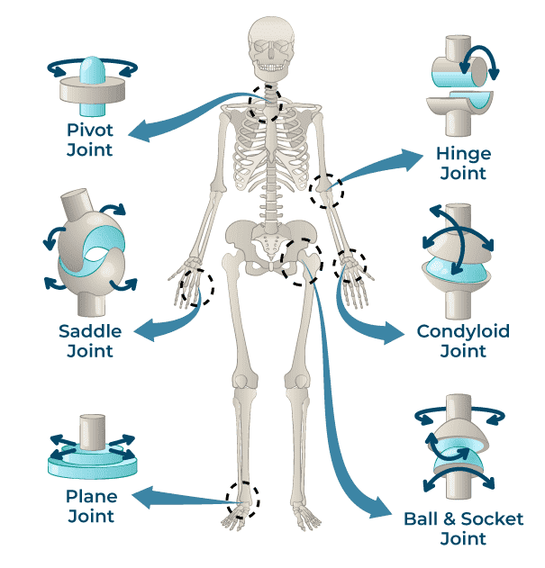
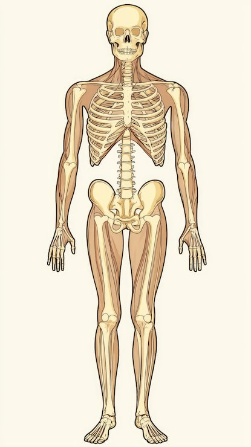

📚 अध्याय के मुख्य भाग
1. पादप और जंतु ऊतक (Plant and Animal Tissues)
• जंतु में पेशी ऊतक (Muscular Tissue) गति संभव बनाते हैं।
• तंत्रिका ऊतक (Nervous Tissue) संदेशों को शरीर के विभिन्न भागों तक पहुँचाते हैं।
• जाइलम (Xylem) → जल और खनिजों का परिवहन।
• फ्लोएम (Phloem) → भोजन का परिवहन।
पोषण की विधि तथा कोशिकीय लचीलेपन से संबंधित।
- पादप कोशिकाएँ सामान्यतः स्थिर और दृढ़ होती हैं।
- जंतु कोशिकाएँ अपेक्षाकृत लचीली होती हैं।
- वृद्धि का पैटर्न भी भिन्न होता है।
2. विभज्योतक ऊतक (Meristematic Tissue)
सक्रिय रूप से विभाजित होने वाली कोशिकाओं के समूह को विभज्योतक ऊतक (Meristematic Tissue) कहते हैं।
• पौधों की वृद्धि के लिए उत्तरदायी।
1) शीर्षस्थ विभज्योतक (Apical Meristem)
- लंबाई में वृद्धि।
- जड़ और प्ररोह के अग्रभाग पर।
- अग्रभाग का वृद्धि क्षेत्र।
2) पार्श्व विभज्योतक (Lateral Meristem)
- परिधि/मोटाई में वृद्धि।
- द्विबीजपत्री पौधों में लंबाई के साथ परिधि वृद्धि।
- तना मोटा होता है।
- कुछ पेड़ों के वार्षिक वलय चौड़े/संकरे, अनुकूल/प्रतिकूल वृद्धि परिस्थितियों का संकेत देते हैं।
3) अंतर्वेशी विभज्योतक (Intercalary Meristem)
- पर्व के आधार पर या पर्वसंधि के ठीक ऊपर।
- काट दिए जाने के बाद भी वृद्धि संभव।
पर्वसंधि (Node) → तने का बिंदु जहाँ शाखा/पत्ती निकलती है।
पर्व (Internode) → दो पर्वसंधियों के बीच भाग।

3. विभज्योतक ऊतक की कोशिकाओं की विशेषताएँ (Features of Meristematic Tissue Cells)
जब कोशिकाएँ सहारा, परिवहन, भंडारण आदि विशिष्ट कार्यों के लिए विशेष रूप धारण करती हैं।
4. स्थायी ऊतक (Permanent Tissue)
विभेदन के बाद बनने वाले ऊतक स्थायी ऊतक (Permanent Tissue) कहलाते हैं।
ये सरल या जटिल, एक या अधिक प्रकार की कोशिकाओं से बने हो सकते हैं।
5. सुरक्षात्मक ऊतक — बाह्यत्वचा (Protective Tissue — Epidermis)
• सबसे बाहरी परत।
कार्य (Functions)
- क्षति से बचाना।
- जल की हानि कम करना।
- हानिकारक सूक्ष्मजीवों से रक्षा।
बाह्यत्वचा (Epidermis) की विशेषताएँ
- सबसे बाहरी परत।
- सामान्यतः चपटी और सघन रूप से व्यवस्थित कोशिकाओं की एकल परत।
- क्यूटिन (Cutin) मोमी पदार्थ की परत से ढकी हो सकती है।
- शुष्क स्थानों में क्यूटिन मोटी होती है, जिससे जल हानि कम होती है।
🌱 मूल रोम (Root Hair)
- जड़ों की बाह्यत्वचा कोशिकाओं में बाल जैसे उभार।
- जल और खनिजों के अवशोषण में सहायता।
🍃 रंध्र (Stomata)
- पत्तियों की बाह्यत्वचा में छोटे छिद्र।
- गैसीय विनिमय।
- वाष्पोत्सर्जन।
पौधे के वायवीय भागों से जल का जलवाष्प के रूप में बाहर निकलना।

6. सरल स्थायी ऊतक (Simple Permanent Tissue)
1) मृदुतक (Parenchyma)
- पतली भित्ति वाली जीवित कोशिकाएँ।
- विरल व्यवस्था।
- अंतःकोशिकीय अवकाश।
- भोजन भंडारण।
- हरे भागों में प्रकाश संश्लेषण।
- जलीय पौधों में वायु गुहिकाएँ, तैरने में सहायता।
2) श्लेषोतक (Collenchyma)
- जीवित कोशिकाएँ।
- कोनों पर पेक्टिन आदि के जमाव से कोशिका भित्ति असमान रूप से मोटी।
- सहारा और लचीलापन।
3) दृढ़ोतक (Sclerenchyma)
- लिग्निन जमाव से भित्तियाँ मोटी/दृढ़।
- अधिकांश कोशिकाएँ मृत।
- मजबूती।
- उदाहरण: नारियल के रेशे, अखरोट के छिलके।

7. संवहन ऊतक (Vascular Tissue)
संवहन ऊतक जटिल स्थायी ऊतक (Complex Permanent Tissue) हैं।
जल और खनिजों का परिवहन
भोजन का परिवहन
जाइलम (Xylem)
- जल परिवहन।
- खनिज परिवहन।
- कुछ यांत्रिक दृढ़ता।
जाइलम के घटक (Components of Xylem)
- वाहिनिकाएँ (Tracheids)
- वाहिकाएँ (Vessels)
- जाइलम तंतु (Xylem Fibres)
- जाइलम मृदुतक (Xylem Parenchyma)
वाहिनिकाएँ (Tracheids), वाहिकाएँ (Vessels) और जाइलम तंतु (Xylem Fibres) सामान्यतः दृढ़ोतकीय और अधिकतर मृत होते हैं।
वाहिनिकाएँ (Tracheids) और वाहिकाएँ (Vessels) नलिकाकार तथा मोटी भित्तियों वाले होते हैं।

8. फ्लोएम (Phloem)
फ्लोएम का मुख्य कार्य भोजन/कार्बनिक पदार्थ का परिवहन है।
फ्लोएम के घटक (Components of Phloem)
चालनी नलिकाएँ (Sieve Tubes)
कुछ कोशिकाएँ लंबी/नलिकाकार, छिद्रित भित्तियों से जुड़ी होती हैं, जो मिलकर चालनी नलिकाएँ बनाती हैं।
सहचर कोशिकाएँ (Companion Cells)
- जीवित।
- चालनी नलिकाओं की कोशिकीय गतिविधियों को नियंत्रित करना।
- शर्करा के loading में सहायता।
फ्लोएम मृदुतक (Phloem Parenchyma)
रेजिन (Resin), टैनिन (Tannin) और लेटेक्स (Latex) का भंडारण।
फ्लोएम तंतु (Phloem Fibres)
फ्लोएम को दृढ़ता प्रदान करते हैं।

9. पादप ऊतक तंत्र (Plant Tissue System)
1) त्वचीय ऊतक तंत्र (Dermal Tissue System)
- बाहरी आवरण।
- आंतरिक रक्षा।
- जल हानि कम।
2) भरण ऊतक तंत्र (Ground Tissue System)
- त्वचीय और संवहन ऊतक के बीच।
- मृदुतक, श्लेषोतक, दृढ़ोतक।
3) संवहन ऊतक तंत्र (Vascular Tissue System)
- जाइलम, फ्लोएम।
- पदार्थों का परिवहन।
10. जंतु ऊतक (Animal Tissues)
11. उपकला ऊतक (Epithelial Tissue)
बाहरी आवरण और आंतरिक अंगों की परत।
उदाहरण: त्वचा, मुँह, फेफड़े, रक्त वाहिकाएँ, आंत का अस्तर।
मुख्य कार्य: जल हानि कम करना, पदार्थों का अवशोषण, स्रवण तथा गति।
उपकला ऊतक के कार्य (Functions)
1) विनिमय (Exchange)
गैस आदि का विनिमय।
उदाहरण: रक्त वाहिका की आंतरिक परत (Blood Vessel Inner Lining), फेफड़ों की परत (Lung Lining)।
2) सुरक्षा (Protection)
घर्षण, सूक्ष्मजीवों और आंतरिक भागों की रक्षा।
उदाहरण: त्वचा (Skin), मुँह (Mouth), श्वासनली (Trachea)।
3) स्रवण (Secretion)
श्लेष्मा (Mucus), एंजाइम (Enzymes), हार्मोन (Hormones), पसीना (Sweat), लार (Saliva) का स्रवण।
उदाहरण: लार ग्रंथियाँ (Salivary Glands), पसीना ग्रंथियाँ (Sweat Glands), आमाशय (Stomach)।
4) संवेदी कार्य (Sensory Function)
गंध, स्वाद, ध्वनि तथा संतुलन का अनुभव।
उदाहरण: नासिका/घ्राण क्षेत्र (Nasal/Olfactory Region), स्वाद कलिकाएँ (Taste Buds), आंतरिक कान (Inner Ear)।
5) अवशोषण (Absorption)
पोषक पदार्थों और जल का अवशोषण।
उदाहरण: छोटी आँत की परत (Small Intestine Lining)।
छोटी आँत की उपकला में स्तंभाकार कोशिकाएँ तथा अवशोषण के लिए विशेष संरचनाएँ सूक्ष्मांकुर (Microvilli) पाई जाती हैं।
12. संयोजी ऊतक (Connective Tissue)
संयोजी ऊतक विभिन्न ऊतकों और अंगों को जोड़ता तथा सहारा देता है।
उदाहरण: रक्त (Blood), हड्डी (Bone), उपास्थि (Cartilage), कंडरा (Tendon), स्नायुबंधन (Ligament)।
रक्त (Blood)
रक्त एक तरल संयोजी ऊतक (Liquid Connective Tissue) है।
पोषक पदार्थों, गैसों तथा हार्मोनों (Hormones) का परिवहन करता है।
रक्त के घटक (Components of Blood)
लाल रक्त कोशिकाएँ (RBC)
- हीमोग्लोबिन (Hemoglobin) के कारण लाल रंग।
- हीमोग्लोबिन iron-rich protein है।
- लगभग 4 महीने का जीवनकाल।
- नियमित रूप से replacement होता है।
रक्त पट्टिकाएँ (Platelets)
चोट लगने पर रक्त का थक्का बनने में सहायता करते हैं।
श्वेत रक्त कोशिकाएँ (WBC)
- संक्रमण से रक्षा।
- संक्रमित स्थान पर इनके जमा होने से pus बन सकता है।
13–16. हड्डी, उपास्थि, कंडरा और स्नायुबंधन (Bone, Cartilage, Tendon & Ligament)
🦴 हड्डी (Bone)
- दृढ़ता, सहारा और सुरक्षा।
- उदाहरण: खोपड़ी (Skull), पसलियाँ (Ribs), कोहनी की हड्डियाँ (Elbow Bones)।
- Matrix में calcium और phosphorus salts होते हैं, जिससे bone कठोर होती है।
🦴 उपास्थि (Cartilage)
- नरम और लचीला।
- शरीर के कुछ भागों में लचीलापन प्रदान करता है।
- उदाहरण: कान (Ear), नाक (Nose)।
- अपेक्षाकृत नरम jelly-like matrix।
💪 कंडरा (Tendon)
- मांसपेशी को हड्डी से जोड़ता है।
- उदाहरण: उँगलियों की मांसपेशियों को हड्डियों से जोड़ना।
🔗 स्नायुबंधन (Ligament)
- हड्डी को हड्डी से जोड़ता है।
- उदाहरण: घुटने का जोड़ (Knee Joint)।
17. शरीर की गति का नियंत्रण (Body Movement Control)
अपनी इच्छा के अनुसार होने वाली गति।
उदाहरण: चलना, लिखना, वस्तु उठाना।
अपनी इच्छा के अनुसार नहीं होने वाली गति।
उदाहरण: हृदय की धड़कन (Heartbeat), पलक झपकना (Blinking), पाचन (Digestion)।
18. पेशीय ऊतक (Muscular Tissue)
मांसपेशी कोशिकाएँ लंबी होती हैं, जिन्हें मांसपेशी तंतु (Muscle Fibres) कहा जाता है।
1) कंकालीय/ऐच्छिक पेशी (Skeletal / Voluntary Muscle)
- लंबी बेलनाकार कोशिकाएँ (Cylindrical Cells)।
- सामान्यतः अशाखित तंतु (Unbranched Fibres)।
- अनेक केंद्रक (Many Nuclei)।
- धारियाँ (Striations) पाई जाती हैं।
- मुख्यतः ऐच्छिक (Voluntary)।
2) चिकनी/अनैच्छिक पेशी (Smooth / Involuntary Muscle)
- सामान्यतः एक केंद्रक (One Nucleus)।
- धारियाँ (Striations) नहीं होतीं।
- अनैच्छिक (Involuntary)।
3) हृदय पेशी (Cardiac Muscle)
- बेलनाकार और शाखित (Cylindrical and Branched)।
- धारियाँ (Striations) पाई जाती हैं।
- सामान्यतः एक केंद्रक।
- अनैच्छिक (Involuntary)।
- हृदय की धड़कन (Heartbeat) के लिए जिम्मेदार।

19. तंत्रिका ऊतक (Nervous Tissue)
तंत्रिका ऊतक की कोशिकाओं को तंत्रिका कोशिका (Neuron) कहा जाता है।
यह संकेतों (Signals) को प्राप्त और संचारित करता है।
1) कोशिका काय (Cell Body)
इसमें केंद्रक (Nucleus) होता है और यह कोशिका की गतिविधियों को नियंत्रित करता है।
2) द्रुमिका (Dendrite)
अन्य neurons या sensory cells से signals प्राप्त करता है।
3) अक्षतंतु (Axon)
message को आगे ले जाता है। इसका अंतिम भाग अक्षतंतु सिरा (Axon Terminal) कहलाता है।

20. पेशी-अस्थि तंत्र (Musculoskeletal System)
पेशी-अस्थि तंत्र में हड्डियाँ (Bones), मांसपेशियाँ (Muscles), जोड़ (Joints), उपास्थि (Cartilage), कंडरा (Tendon) और स्नायुबंधन (Ligament) शामिल होते हैं।
- जब muscle contract करती है, tendon force को bone तक पहुँचाता है।
- Joints bones को जोड़ते हैं और movement की अनुमति देते हैं।
- Joint स्वयं bones को move नहीं करता।
- Muscle contraction की force bones को move करती है।
21. जोड़ों के प्रकार (Types of Joints)
1) गेंद और गर्त जोड़ (Ball and Socket Joint)
- उदाहरण: कंधा (Shoulder)।
- Arm को आगे, पीछे, side तथा circular direction में move कर सकता है।
- हंसली (Clavicle) महत्वपूर्ण है।
2) काज जोड़ (Hinge Joint)
- उदाहरण: कोहनी (Elbow) और घुटना (Knee)।
- मुख्यतः एक दिशा में bending और straightening।
- घुटने की टोपी/पटेला (Kneecap/Patella) knee joint की रक्षा करता है।
3) धुरी जोड़ (Pivot Joint)
- उदाहरण: गर्दन (Neck)।
- सिर को घुमाने में सहायता करता है।
4) स्थिर जोड़ (Fixed Joint)
- उदाहरण: खोपड़ी (Skull)।
- बहुत कम या कोई movement नहीं।

22. कंकाल तंत्र (Skeletal System)
कंकाल तंत्र हड्डियों का framework है जो शरीर को दृढ़ता (Rigidity) और सहारा (Support) प्रदान करता है।
- खोपड़ी के आधार से निकलने वाली flexible rod को कशेरुक स्तंभ (Vertebral Column) कहते हैं।
- यह कशेरुकाओं (Vertebrae) से बना होता है।
- दो कशेरुकाओं के बीच उपास्थियुक्त चकती (Cartilaginous Disc) flexibility प्रदान करती है।
- 12 जोड़ी पसलियाँ (12 Pairs of Ribs) वक्ष पिंजर (Rib Cage) बनाती हैं।

23. पादप कोशिकीय पुनर्जनन प्रयोग (Plant Cellular Regeneration Experiment)
प्रयोग से यह दिखाया गया कि कुछ जीवित plant cells पूरे पौधे को regenerate कर सकती हैं।
यह प्रयोग plant cell regeneration को समझने में महत्वपूर्ण रहा।
24. पादप रोग — किरीट पिटिका (Plant Disease — Crown Gall)
रोग: किरीट पिटिका (Crown Gall)
कारक जीव: Agrobacterium tumefaciens
यह जीव Crown Gall रोग उत्पन्न कर सकता है।
🚆 परीक्षा के लिए महत्वपूर्ण बिंदु (Exam Important Points)
- जाइलम (Xylem) → जल और खनिज
- फ्लोएम (Phloem) → भोजन
- शीर्षस्थ (Apical) → लंबाई
- पार्श्व (Lateral) → परिधि/मोटाई
- अंतर्वेशी (Intercalary) → पर्व/पर्वसंधि के पास वृद्धि
- मृदुतक (Parenchyma) → भंडारण/प्रकाश संश्लेषण
- श्लेषोतक (Collenchyma) → सहारा/लचीलापन
- दृढ़ोतक (Sclerenchyma) → मजबूती
- जाइलम मृदुतक (Xylem Parenchyma) → जाइलम का जीवित घटक
- फ्लोएम (Phloem) → भोजन परिवहन
- कंडरा (Tendon) → मांसपेशी से हड्डी
- स्नायुबंधन (Ligament) → हड्डी से हड्डी
- हड्डी (Bone) → दृढ़ सहारा/सुरक्षा
- उपास्थि (Cartilage) → लचीलापन
- लाल रक्त कोशिकाएँ (RBC) → हीमोग्लोबिन के कारण लाल
- रक्त पट्टिकाएँ (Platelets) → रक्त का थक्का
- श्वेत रक्त कोशिकाएँ (WBC) → संक्रमण से रक्षा
- ऐच्छिक गति (Voluntary Movement) → इच्छा के अनुसार
- चिकनी पेशी (Smooth Muscle) → अनैच्छिक
- हृदय पेशी (Cardiac Muscle) → अनैच्छिक, हृदय
- तंत्रिका कोशिका (Neuron) → तंत्रिका संकेतों का संचार
- द्रुमिका (Dendrite) → संदेश प्राप्त करती है
- अक्षतंतु (Axon) → संदेश आगे ले जाता है
- गेंद और गर्त जोड़ (Ball and Socket) → कंधा
- काज जोड़ (Hinge) → कोहनी/घुटना
- धुरी जोड़ (Pivot) → गर्दन
- स्थिर जोड़ (Fixed) → खोपड़ी
- 12 जोड़ी पसलियाँ → वक्ष पिंजर (Rib Cage)
- Agrobacterium tumefaciens → Crown Gall